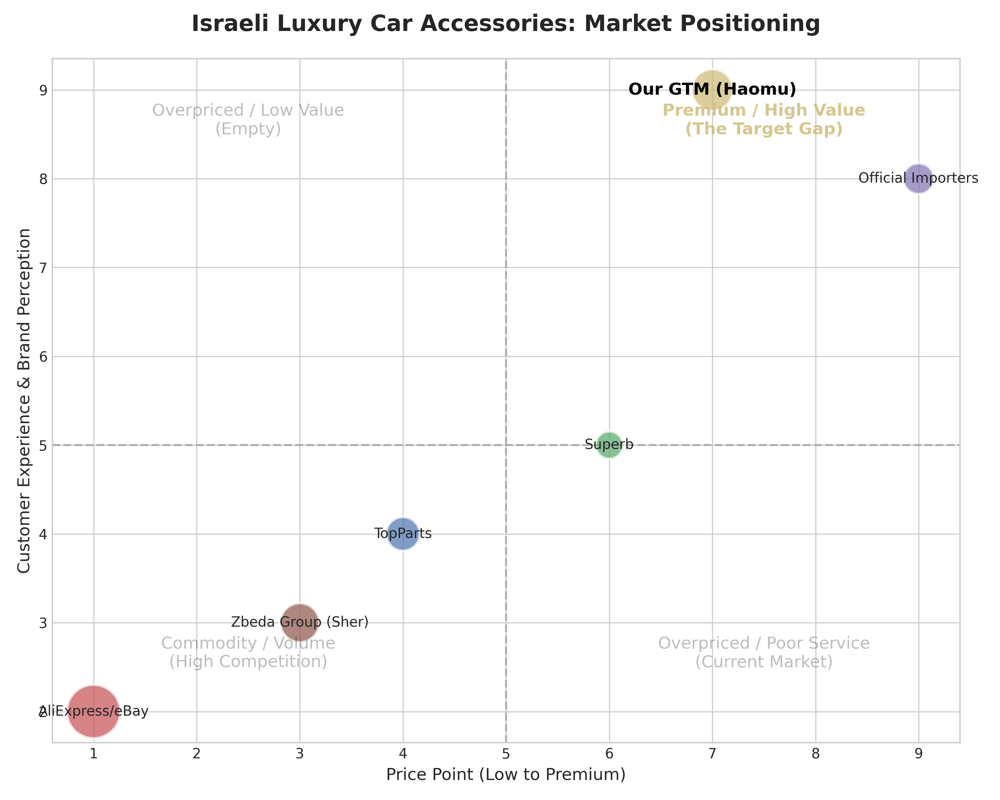
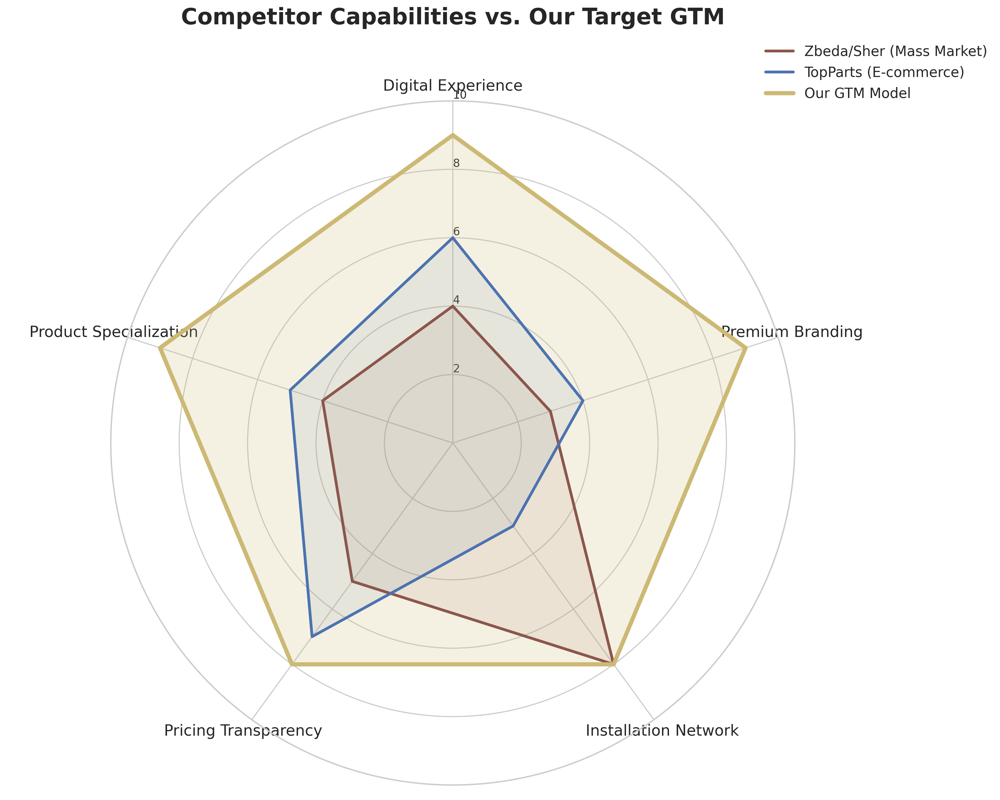

מאת: Manus AI (צוות אסטרטגיה ומחקר)
תאריך: אפריל 2026
שוק אביזרי היוקרה בישראל (BMW, Mercedes, Audi) סובל מ"אפקט הקיטוב": מצד אחד יבואנים רשמיים עם מחירי עתק (3,000+ ש"ח לגריל), ומצד שני חנויות מסה ואתרי איקומרס עם חוויית קנייה זולה, אתרים מיושנים, ושירות בינוני. ההזדמנות (The Gap) היא לא להיות "הכי זולים" אלא להיות "הפרימיום הנגיש" — מותג D2C שנותן חוויית קנייה של סוכנות רכב, עם מוצרי OEM-Fit של Haomu, במחיר הוגן, ועם רשת מתקינים מורשים (White-Glove Service). ההפרעה לשוק תגיע לא דרך מלחמת מחירים, אלא דרך מלחמת חוויית לקוח.
השוק הישראלי לאביזרי רכב (Aftermarket) מגלגל כ-80 מיליון דולר בשנה, מתוכם סגמנט היוקרה מהווה כ-15-20%. הנה מי ששולט בו היום:
| השחקן | מיצוב וחוזקות | חולשות ופערים (The Gap) |
|---|---|---|
| קבוצת זבידה (Sher / Gal-Or) | הגורילה של השוק. 80% מהפעילות היא B2B מול מוסכים. לוגיסטיקה חזקה (Atlas). | מסה, לא יוקרה. מוכרים תחת מותג המדבקה "American Eagle". אין חוויית פרימיום ללקוח הקצה. |
| TopParts | חנות האיקומרס הגדולה בישראל לחלקי חילוף. מגוון עצום של פריטים מכל הסוגים. | חוויית קנייה של מחסן. אתר עמוס, אין תחושת יוקרה. הלקוח מרגיש שהוא קונה "חלק חילוף" ולא "שדרוג עיצובי". |
| סופרב אביזרים (Superb) | חנות פיזית חזקה (חולון) + אונליין. מתמחים גם בג'יפים. מלאי זמין מיידית. | הכל מהכל. מוכרים גם לטנדרים וגם ל-BMW. אין מיקוד בנישת היוקרה הספציפית. |
| היבואנים הרשמיים (דלק מוטורס / כלמוביל) | מוצרי מקור (M-Performance / AMG), חוויית פרימיום מלאה. | תמחור שערורייתי. לקוחות בורחים בגלל מחירים גבוהים פי 3-4 ממחירי השוק. |
| AliExpress / eBay | מחיר רצפה. מגוון אינסופי. | חוסר אמון. זמן משלוח ארוך, אין התאמה מובטחת (Fitment), אין מי שיתקין. |

כפי שניתן לראות, הרביע העליון-ימני (פרימיום/ערך גבוה) ריק. רוב השחקנים מצטופפים באזור המחיר הבינוני עם חוויה בינונית.
איש המכירות (Sales Strategist): "אנחנו צריכים להיכנס מתחת לרדאר של זבידה. הם כבדים. בואו ניקח את 3 המוצרים המנצחים (גרילים של BMW ומרצדס) ונמכור אותם ישירות ללקוח הקצה (D2C) ב-20% פחות מ-TopParts. נביא טראפיק דרך קבוצות פייסבוק כמו 'משפחת במוו ישראל'."
איש המיתוג והפסיכולוגיה (Psychology/Brand Expert): "טעות מוחלטת. אם נמכור ב-20% פחות, נהפוך ל'עוד חנות זולה'. בעל BMW סדרה 3 לא מחפש את הגריל הכי זול, הוא מחפש ודאות שזה ייראה מקורי ושההתקנה לא תהרוס לו את הרכב. ההפרעה לא תהיה במחיר, אלא בהורדת החיכוך. השחקנים היום מוכרים קופסה. אנחנו נמכור שקט נפשי."
מנהל האופרציה (Operations/Workflow Builder): "אני מסכים עם המיתוג. הבעיה של קנייה מאליאקספרס היא 'מי יתקין לי את זה?'. מוסכים מורשים לא מוכנים להתקין חלקים שקנית ברשת. ההפרעה שלנו תהיה מודל משולב: הלקוח קונה באתר הפרימיום שלנו, והמוצר נשלח ישירות לאחד מ-5 מוסכי התקנה (White-Glove Partners) שבחרנו מראש. הלקוח רק מגיע להתקין."
איש המחקר (Research Expert - הערה ליובל): "השאלה שיובל שאל הייתה טובה, אבל כדי להיות מדויקים יותר, הייתי מנסח אותה כך: 'בהינתן שקבוצת זבידה שולטת בלוגיסטיקת המסה, ו-TopParts שולטים באיקומרס הגנרי, מהי הצעת הערך (Value Proposition) הייחודית שבעל רכב יוקרה ישראלי לא מקבל היום מאף אחד מהם, ואיך קטלוג Haomu סוגר את הפער הזה במודל רזה?' התשובה היא: חוויית התקנה (White-Glove) ומיקוד אובססיבי ב-Fitment."

המודל שלנו מתמקד בנקודות העיוורות של השוק: חוויה דיגיטלית, מיתוג פרימיום, ורשת התקנה מוסדרת.
לא "חנות אביזרים", אלא "סטודיו לשדרוג רכבי יוקרה".
השפה היא לא של חלקי חילוף ("מק"ט 51712165528"), אלא של שדרוג ("BMW G20 M-Performance Style Upgrade"). אנחנו לא מתחרים מול TopParts, אנחנו האלטרנטיבה השפויה למוסך המרכזי של דלק מוטורס.
רשת מתקיני הפרימיום (White-Glove Network).
החיכוך הגדול ביותר של הלקוח הוא "איך אני מתקין את זה בלי לשבור קליפסים?". אנחנו נסגור הסכמים עם 3 סדנאות דיטיילינג/שדרוג יוקרה (מרכז, שרון, שפלה). כשהלקוח קונה, הוא משלם על המוצר + התקנה. המוצר מחכה לו בסדנה. יצרנו לו חוויית קצה לקצה.
The "OEM-Fit" Guarantee.
ההתנגדות הסמויה היא "זה ייראה סיני וזול". ההצעה שלנו: "התאמה מושלמת מובטחת. אם הגריל לא יושב 100% כמו המקורי - כספך מוחזר וההתקנה עלינו". זה הורג את הפחד מקניית Aftermarket.
הפיתוי להרחיב את הקטלוג מהר מדי. אם נתחיל להביא שטיחים, עצי ריח וכיסויי הגה כדי "להגדיל סל" - נאבד את מיצוב היוקרה ונהפוך לעוד "אוטו דיפו". אנחנו מוכרים אסתטיקת פרימיום. אם זה לא נראה כמו חלק מקורי של M-Performance או AMG - זה לא נכנס לאתר.